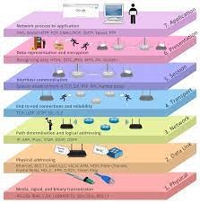
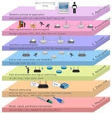
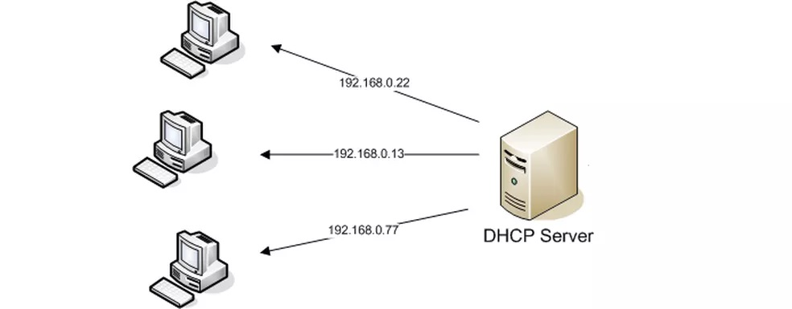
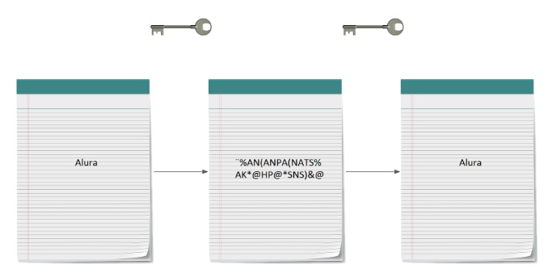

|  | O que é o modelo OSI? O modelo de interconexão de sistemas abertos (OSI) é um modelo conceitual criado pela Organização Internacional de Normalização que permite que diversos sistemas de comunicação se comuniquem usando protocolos padronizados. |
|  | O que é o modelo OSI? O modelo de interconexão de sistemas abertos (OSI) é um modelo conceitual criado pela Organização Internacional de Normalização que permite que diversos sistemas de comunicação se comuniquem usando protocolos padronizados. |
Diferente do UDP, o TCP é voltado à conexão e tem como garantia a integridade e ordem de todos os dados. Para manter a confiabilidade dos dados, o TCP utiliza um aperto de mãos de três vias, o three way handshake, também chamado de SYN,SYN-ACK,ACK.
O protocolo UDP funciona de forma semelhante ao TCP, mas elimina todo o material de verificação de erros. Toda a comunicação de ida e volta introduz latência, tornando as coisas mais lentas. Quando um aplicativo usa UDP, os pacotes são enviados apenas para o destinatário.
Ao final, como resumo, podemos entender que o UDP serve melhor casos em que a integridade constante dos dados não é essencial (é menos importante que a velocidade da comunicação), como em livestreams de vídeos e jogos online.
Por outro lado, o TCP funciona melhor em casos que a confiabilidade do transporte de dados é o foco, como quando trabalhamos com comunicação em texto ou com documentos.
DNS
° Significado da abreviação: Domain Name System
° Tradução: Sistema de Nome de Domínio
° Criado em: 1984, Microsoft Corporation
O DNS (Domain Name System – Sistema de nome de domínio) converte nomes de domínio legíveis por humanos (por exemplo, www.amazon.com) em endereços IP legíveis por máquina (por exemplo, 192.0.2.44).
O protocolo DHCP é um protocolo de cliente/servidor que fornece automaticamente um host IP (Protocolo de Internet) com seu endereço IP e outras informações de configuração relacionadas, como a máscara de sub-rede e o gateway padrão.
O FTP (File Transfer Protocol) ou Protocolo de Transferência de Arquivos, em português, é um protocolo usado para transferir arquivos por uma rede de computadores, desde uma local à internet. Basicamente, permite a troca de arquivos entre dois computadores de modo direto, em que um ganha acesso às pastas do outro.
Analisando o nome do protocolo HTTP, vemos que se trata de um protocolo para transferência de texto, dessa forma, os dados e senha do cartão de crédito são passados como um texto para o servidor também! Isso significa que, se caso alguém analisar essas informações será capaz de ver quais são os dados e senha do cartão de crédito. Portanto, quaisquer aplicações web que usam o protocolo HTTP e precisam passar dados sensíveis, possuem uma vulnerabilidade para o cliente final.
O HTTPS fez uma transformação nesses dados que foi enviado pelo cliente e com isso não foi possível descobrir os dados enviados pela vítima. Essa tranformação de um dado que acaba por ser incompreensível por nós humanos caracterizamos como um processo de criptografia.
Um web server é um sistema computacional que hospeda e fornece acesso aos conteúdos e aplicações através da internet. Geralmente contratado como um serviço, esse servidor recebe e processa as solicitações feitas por navegadores através de protocolos de rede como o HTTP ou HTTPS.